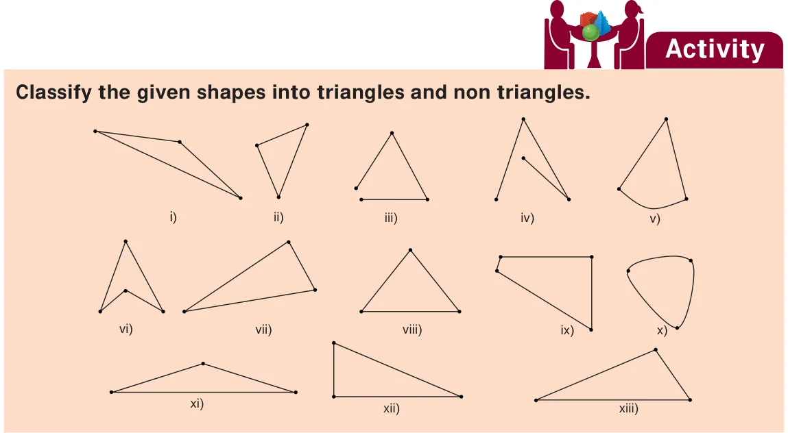

Learning Objectives
- To understand the formation of triangles and the basic elements of a triangle.
- To know the types of triangles and their properties.
- To draw parallel and perpendicular lines using a set square.
We already studied the basic geometrical concepts such as angles and its types, drawing line segments, drawing and measuring angles in the first term. In this term, we will study triangles and their types, construction of parallel and perpendicular lines to a given line segment.
MATHEMATICS ALIVE - TRIANGLES IN REAL LIFE
The triangle is used in most types of construction work including bridges, buildings, cell-phone towers, aeroplane wings and pitched roofs. Its use in construction gives an object the quality of stiffness, resulting in rigid and strong structures.
Think about the situation:
A teacher distributes 2, 3, 4 and 5 sticks of equal lengths to four students and asks them to form a closed figure. Three students make the following figures.
But one of the students who has 2 sticks with him creates the following figure.
He is not able to create a closed figure. Do you know why? Can you guess the least number of sticks required to form a closed figure? Three sticks. If you had formed a closed figure with three sticks, then what shape would you get? Is there any special name for it? Yes. Its triangle.
A closed figure formed by three line segments is called a triangle.
